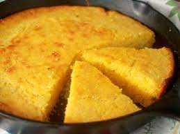

Cornbread

A pan of cornbread
This is a recipe for cornbread.
It's a good idea to make these when you need a nice side dish.
Ingredients
- 1/2 cup cornmeal
- 1 cup flour
- 1 cup milk
- enough sugar
- Mix the dry ingredients in a medium bowl.
- Mix the butter, sugar, and eggs. Add the vanilla.
- Add the dry ingredients to the wet ingredients. Stir to combine. Do not overmix.